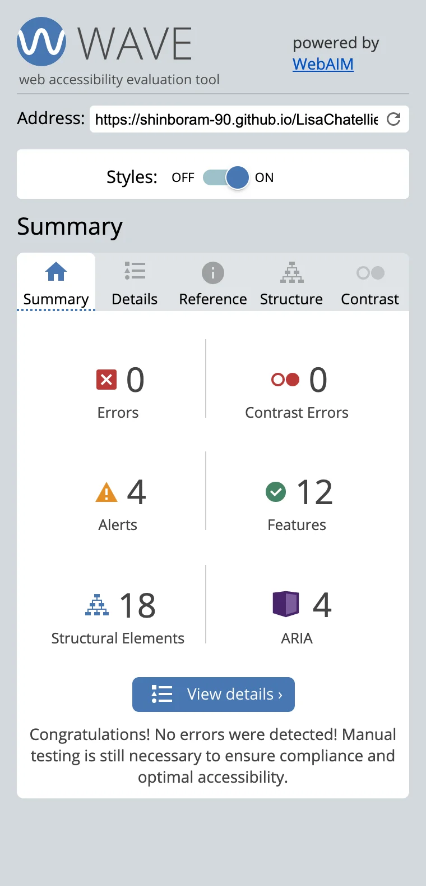

Rapport d'optimisation | La Chouette Agence
Comparaison du site "La Chouette Agence" avant et après les mofification apportées
Deuxième page

Version mobile


Accessibilité avec Wave
Avant
Après
Structure
Avant

Après
Responsive
Images
AVANT
- Taille : 273 Ko
- Dimensions 1003x1003
- Type : Image JPEG

APRÈS
- Taille : 21 Ko
- Dimensions 320x320
- Type : Image WebP
Audit
- Le temps de réponse initial du serveur était court Le document racine a pris 150 ms
- Éviter une taille excessive de DOM 174 éléments
- Réduire le travail du thread principal 0,8 s
- Différez le chargement des images hors écran
- Réduisez la taille des ressources CSS
- Activez la compression de texte
- Connectez-vous à l'avance aux origines souhaitées
- Évitez les redirections de page multiples
- Utilisez des formats vidéo pour le contenu animé
- Supprimez les modules en double dans les groupes JavaScript
- Évitez d'utiliser de l'ancien code JavaScript dans les navigateurs récents
- Délai d'exécution de JavaScript 0,1 s
- Largest Contentful Paint image was not lazily loaded
- La page utilise des écouteurs d'événements passifs pour améliorer les performances de défilement
- Évite document.write()
- Une balise meta name="viewport" ayant l'attribut width ou initial-scale est configurée
- Le temps de réponse initial du serveur était court Le document racine a pris 110 ms
- Éviter une taille excessive de DOM 124 éléments
- Réduire le travail du thread principal 0,6 s
- Dimensionnez correctement les images
- Encodez les images de manière efficace
- Diffusez des images aux formats nouvelle génération
- Éviter d'énormes charges utiles de réseau La taille totale était de 538 Kio
Performance